STANDARD PROCTOR COMPACTION TEST
Objective:
To determine optimum moisture content and maximum dry density for a soil by conducting standard proctor compaction test.
Apparatus used:
Cylindrical mould, Rammer, Weighing machine, Graduated jar, Trowel, Oven etc.

 Description
Compaction is a type of mechanical stabilization where the soil mass is densified with mechanical energy, also known as compactive effort. The mechanical energy may be produced by the dynamic load, static load, vibration, or tamping. During compaction, the soil particles are relocated, and the air volume is reduced. It may also involve a modification of the moisture content, and in the saturated coarse-grained soil, the moisture content may be pressed out during the process of compaction.
Description
Compaction is a type of mechanical stabilization where the soil mass is densified with mechanical energy, also known as compactive effort. The mechanical energy may be produced by the dynamic load, static load, vibration, or tamping. During compaction, the soil particles are relocated, and the air volume is reduced. It may also involve a modification of the moisture content, and in the saturated coarse-grained soil, the moisture content may be pressed out during the process of compaction.
Take air dried soil in a pan and measure it up to 2kg using weighing machine.
 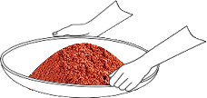
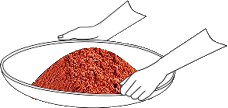
Place 20µm sieve on the pan and pour weighed quantity of air dried soil (Fine aggregate) to the sieve then close the lid.


Place the set of sieves in the mechanical shaker and allow to shake for 10 minutes.
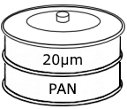


Collect the residue left on the 20µm sieve in a separate container.
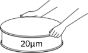
Measure required quantity of water, then add it to the soil and mix it thoroughly and uniformly.
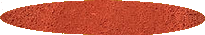

 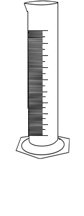
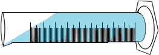
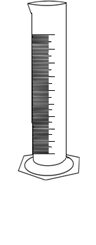
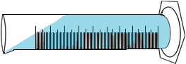


Measure the weight of the empty mould along with the base plate.
Weight of empty mould along with the base plate (Wc) = _________ g
Fill the mould in 3 layers with the soil sample. Each layer is compacted by giving 25 evenly distributed blows using the rammer.


 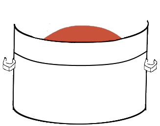
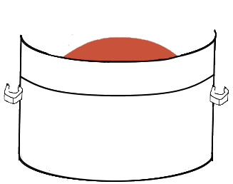
Place collar on top of the mould as shown below before proceeding.
Remove the collar and then remove extra soil from the mould using edge steel.

Weigh the mould containing soil sample along with the base plate.
Weight of empty mould along with the base plate + compacted soil (W1) = _________ g
Measure the weight of the empty container.

Weight of empty container (W2) = _________ g
Take some soil sample in a container for water content determination.
Remove the mould from the base plate before proceeding.
Measure the weight of the container with wet soil.
Weight of container + wet soil (W3) = _________ g
Place the container with wet soil in the oven for 24 hours at 110°C temperature.


After 24 hours
Measure the weight of the dry soil sample.
0.003
Weight of container + dry soil (W4) = _________ g
Observations:
| Trial No. | |
| Water to be added | |
| Weight of cylinder + compacted soil, W1 | |
| Weight of empty container, W2 | |
| Weight of container + wet soil, W3 | |
| Weight of container + dry soil, W4 |
Variables used in calculation:
| Empty weight of mould, Wc | 2315 g |
| Weight of compacted soil, Ww (g) | W1 - Wc |
| Volume of mould, Vc | 981.74 cc |
Calculations:
| Wet density, ρwet = | Ww⁄Vc = g/cc |
| Water content, W = | W3-W4⁄W4-W2 x 100 |
| = | |
| Dry Density, ρdry = | ρwet⁄1+W = g/cc |
Repeat the procedure from step
1 - 14 for 2 more trials
Observations:
| Trial No. | Water to be added (g) | Weight of cylinder + compacted soil, W1 (g) | Weight of compacted soil, Ww (g) | Wet density, ρwet (g/cc) ρwet = Ww⁄Vc | Weight of empty container, W2 (g) | Weight of empty container + wet soil, W3 (g) | Weight of empty container + dry soil, W4 (g) | Moisture content, W W = W3-W4⁄W4-W2 x 100 | Dry Density, ρdry (g/cc) ρdry = ρwet⁄1+W |
Characteristic Curves
Inference: The soil sample taken for the experiment is sandy clay soil which has quick water draining capacity and is easy to work with.

Trial =